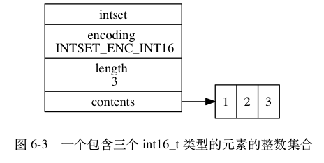
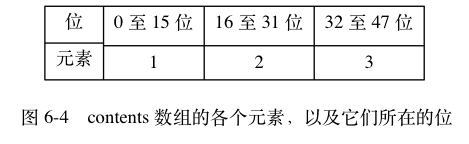
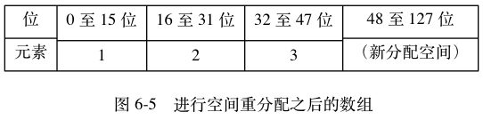
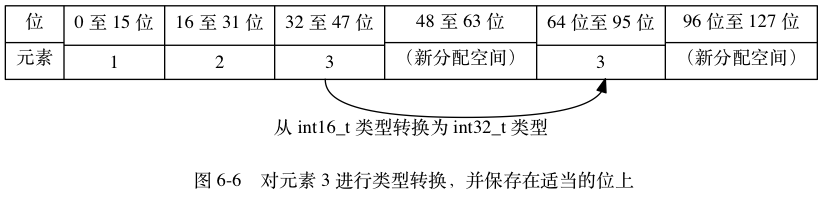
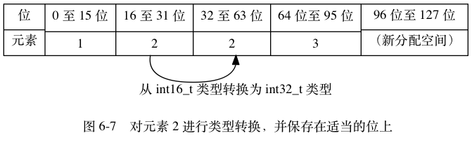
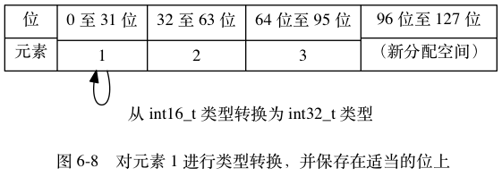
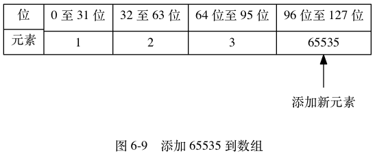

升级¶
每当我们要将一个新元素添加到整数集合里面， 并且新元素的类型比整数集合现有所有元素的类型都要长时， 整数集合需要先进行升级（upgrade）， 然后才能将新元素添加到整数集合里面。
升级整数集合并添加新元素共分为三步进行：
- 根据新元素的类型， 扩展整数集合底层数组的空间大小， 并为新元素分配空间。
- 将底层数组现有的所有元素都转换成与新元素相同的类型， 并将类型转换后的元素放置到正确的位上， 而且在放置元素的过程中， 需要继续维持底层数组的有序性质不变。
- 将新元素添加到底层数组里面。
举个例子，
假设现在有一个 INTSET_ENC_INT16 编码的整数集合，
集合中包含三个 int16_t 类型的元素，
如图 6-3 所示。

因为每个元素都占用 16 位空间，
所以整数集合底层数组的大小为 3 * 16 = 48 位，
图 6-4 展示了整数集合的三个元素在这 48 位里的位置。

现在，
假设我们要将类型为 int32_t 的整数值 65535 添加到整数集合里面，
因为 65535 的类型 int32_t 比整数集合当前所有元素的类型都要长，
所以在将 65535 添加到整数集合之前，
程序需要先对整数集合进行升级。
升级首先要做的是， 根据新类型的长度， 以及集合元素的数量（包括要添加的新元素在内）， 对底层数组进行空间重分配。
整数集合目前有三个元素，
再加上新元素 65535 ，
整数集合需要分配四个元素的空间，
因为每个 int32_t 整数值需要占用 32 位空间，
所以在空间重分配之后，
底层数组的大小将是 32 * 4 = 128 位，
如图 6-5 所示。

虽然程序对底层数组进行了空间重分配，
但数组原有的三个元素 1 、 2 、 3 仍然是 int16_t 类型，
这些元素还保存在数组的前 48 位里面，
所以程序接下来要做的就是将这三个元素转换成 int32_t 类型，
并将转换后的元素放置到正确的位上面，
而且在放置元素的过程中，
需要维持底层数组的有序性质不变。
首先，
因为元素 3 在 1 、 2 、 3 、 65535 四个元素中排名第三，
所以它将被移动到 contents 数组的索引 2 位置上，
也即是数组 64 位至 95 位的空间内，
如图 6-6 所示。

接着，
因为元素 2 在 1 、 2 、 3 、 65535 四个元素中排名第二，
所以它将被移动到 contents 数组的索引 1 位置上，
也即是数组的 32 位至 63 位的空间内，
如图 6-7 所示。

之后，
因为元素 1 在 1 、 2 、 3 、 65535 四个元素中排名第一，
所以它将被移动到 contents 数组的索引 0 位置上，
也即是数组的 0 位至 31 位的空间内，
如图 6-8 所示。

然后，
因为元素 65535 在 1 、 2 、 3 、 65535 四个元素中排名第四，
所以它将被添加到 contents 数组的索引 3 位置上，
也即是数组的 96 位至 127 位的空间内，
如图 6-9 所示。

最后，
程序将整数集合 encoding 属性的值从 INTSET_ENC_INT16 改为 INTSET_ENC_INT32 ，
并将 length 属性的值从 3 改为 4 ，
设置完成之后的整数集合如图 6-10 所示。
![digraph {
label = "\n 图 6-10 完成添加操作之后的整数集合";
rankdir = LR;
node [shape = record];
intset [label = " intset | encoding \n INTSET_ENC_INT32 | length \n 4 | <contents> contents "];
contents [label = " { 1 | 2 | 3 | 65535 } "];
intset:contents -> contents;
}](../../_images/graphviz-a1be785cf70da6f653415d42642a25931656fe76.png)
因为每次向整数集合添加新元素都可能会引起升级，
而每次升级都需要对底层数组中已有的所有元素进行类型转换，
所以向整数集合添加新元素的时间复杂度为  。
。
其他类型的升级操作，
比如从 INTSET_ENC_INT16 编码升级为 INTSET_ENC_INT64 编码，
或者从 INTSET_ENC_INT32 编码升级为 INTSET_ENC_INT64 编码，
升级的过程都和上面展示的升级过程类似。
升级之后新元素的摆放位置
因为引发升级的新元素的长度总是比整数集合现有所有元素的长度都大， 所以这个新元素的值要么就大于所有现有元素， 要么就小于所有现有元素：
- 在新元素小于所有现有元素的情况下，
新元素会被放置在底层数组的最开头（索引
0）； - 在新元素大于所有现有元素的情况下，
新元素会被放置在底层数组的最末尾（索引
length-1）。